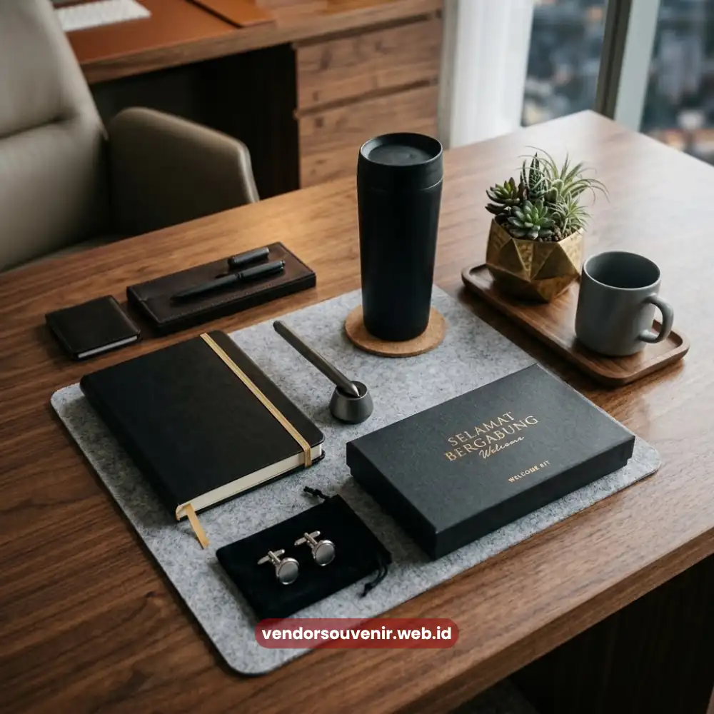
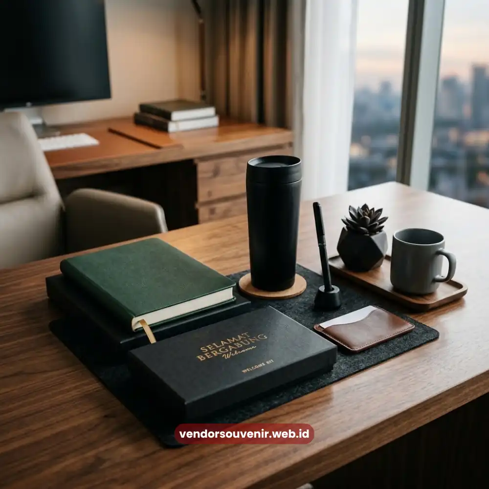

Daftar Isi
Welcome kit karyawan baru adalah paket sambutan berisi kumpulan barang fungsional yang diberikan perusahaan kepada pegawai pada hari pertama bekerja. Paket ini umumnya berisi kombinasi alat tulis, perlengkapan kerja, dan merchandise bertema perusahaan yang dirancang untuk membangun kesan positif sejak awal.
Semakin matang perencanaan welcome kit, semakin kuat pula pesan bahwa perusahaan menghargai kehadiran karyawan barunya.
- Welcome kit adalah paket sambutan berisi barang fungsional untuk karyawan baru pada hari pertama kerja.
- Paket ini berperan penting dalam membentuk kesan pertama dan mempercepat proses adaptasi karyawan.
- Komponen ideal welcome kit mencakup alat tulis, perlengkapan kerja, dan identitas visual perusahaan.
- Konsistensi desain dan kualitas material memengaruhi persepsi profesionalisme perusahaan di mata karyawan.
- Vendor Souvenir dapat membantu merancang welcome kit custom sesuai kebutuhan onboarding perusahaan Anda.
Apa Itu Welcome Kit Karyawan Baru?
Welcome kit karyawan baru merupakan bentuk komunikasi non-verbal dari perusahaan kepada pegawai baru. Pesan ini menyampaikan penyambutan sekaligus pengenalan budaya kerja secara halus.
Berbeda dengan hadiah biasa yang bersifat acak, welcome kit dirancang secara terstruktur. Dirancang sebagai bagian dari strategi onboarding perusahaan.
Peran Welcome Kit dalam Proses Onboarding
Proses onboarding tidak hanya mencakup pengenalan tugas dan tanggung jawab. Tetapi juga pengenalan nilai serta budaya perusahaan secara emosional.
Welcome kit berperan sebagai jembatan emosional tersebut, karena karyawan baru dapat langsung merasakan sentuhan personal. Mereka menerimanya melalui barang fisik pada hari pertama bergabung.
Perbedaan Welcome Kit dengan Hadiah Formalitas Biasa
Hadiah formalitas biasa umumnya diberikan tanpa perencanaan khusus dan sering kali tidak relevan dengan kebutuhan kerja karyawan.
Welcome kit sebaliknya, disusun dengan mempertimbangkan fungsi praktis dan konsistensi visual brand. Serta pengalaman unboxing yang dirancang untuk memberikan kesan mendalam sejak momen pertama dibuka.
Mengapa Welcome Kit Penting bagi Kesan Pertama Perusahaan?
Kesan pertama yang terbentuk pada hari pertama kerja cenderung memengaruhi persepsi jangka panjang karyawan terhadap perusahaan. Termasuk tingkat kenyamanan dan rasa percaya diri mereka dalam beradaptasi dengan lingkungan baru.
Membentuk Persepsi Profesionalisme
Welcome kit yang dikemas rapi dengan desain konsisten mencerminkan tingkat profesionalisme dan perhatian perusahaan terhadap detail.
Persepsi ini secara tidak langsung membangun kepercayaan karyawan baru terhadap standar kerja. Terutama standar kerja yang diterapkan perusahaan secara keseluruhan.

Kesan Pertama Melalui Paket Sambutan Perusahaan
Mempercepat Rasa Memiliki terhadap Perusahaan
Ketika karyawan baru menerima welcome kit yang relevan dan bermanfaat, mereka cenderung lebih cepat merasa menjadi bagian dari tim.
Rasa memiliki ini penting untuk mendukung produktivitas dan keterlibatan karyawan pada masa-masa awal transisi kerja.
Media Pengenalan Budaya Perusahaan secara Halus
Elemen desain, warna, dan pilihan produk dalam welcome kit dapat mencerminkan karakter budaya perusahaan. Apakah perusahaan tersebut memiliki karakter budaya formal, kreatif, atau kolaboratif.
Pengenalan budaya melalui pendekatan ini terasa lebih natural dibandingkan penjelasan verbal semata dalam sesi orientasi.
Apa Saja Komponen Ideal dalam Welcome Kit Karyawan Baru?
Komponen welcome kit sebaiknya disusun dengan mempertimbangkan keseimbangan antara fungsi praktis dan nilai simbolis. Sehingga setiap barang di dalamnya memiliki alasan jelas untuk disertakan.
Perlengkapan Kerja Dasar
Notebook, pulpen, dan organizer kecil merupakan komponen dasar yang hampir selalu relevan bagi seluruh posisi pekerjaan.
Barang-barang ini mendukung aktivitas kerja harian sekaligus menjadi media branding. Serta konsisten terlihat di lingkungan kantor sehari-hari.
Merchandise Identitas Perusahaan
Tumbler, totebag, atau pin dengan desain khas perusahaan berfungsi memperkuat identitas visual sekaligus memberikan nilai emosional. Khususnya bagi karyawan baru yang baru bergabung dengan perusahaan.
Barang-barang ini sering kali menjadi item yang dibawa karyawan ke berbagai kesempatan. Termasuk membawanya saat di luar lingkungan kantor, yang akan memperluas jangkauan brand.
Dokumen dan Informasi Pendukung
Selain barang fisik, welcome kit yang efektif juga dapat menyertakan kartu ucapan selamat bergabung. Atau menyertakan informasi ringkas mengenai struktur tim dan budaya kerja di perusahaan.
Elemen ini menambah dimensi personal pada paket sambutan yang diberikan. Sehingga tidak hanya berisi barang, tetapi juga terselip pesan yang bermakna.
Bagaimana Menjaga Konsistensi Kualitas Welcome Kit?
Konsistensi kualitas welcome kit sangat penting agar pengalaman onboarding setiap karyawan baru tetap setara. Terlepas dari waktu bergabung maupun jumlah karyawan yang direkrut dalam satu periode.
Standarisasi Desain dan Material
Menetapkan standar desain logo, warna, dan jenis material sejak awal membantu menjaga konsistensi visual. Standarisasi ini akan sangat bermanfaat bagi identitas perusahaan dalam jangka panjang.
Hal ini juga mempermudah proses produksi ulang ketika perusahaan membutuhkan tambahan welcome kit. Terutama pada periode rekrutmen karyawan baru berikutnya.
Evaluasi Berkala terhadap Relevansi Isi Kit
Kebutuhan kerja dan tren merchandise dapat berubah seiring waktu yang berjalan. Sehingga isi welcome kit sebaiknya dievaluasi secara berkala agar tetap relevan dengan kebutuhan karyawan.
Evaluasi ini juga dapat mempertimbangkan masukan dari para karyawan. Khususnya karyawan yang telah menerima welcome kit sebelumnya saat onboarding.

Vendor Souvenir Siap Membantu Kebutuhan Onboarding Anda
Welcome kit karyawan baru bukan sekadar formalitas seremonial, melainkan investasi strategis dalam membangun kesan pertama. Juga mempercepat adaptasi, serta memperkuat identitas budaya perusahaan di mata karyawan baru.
Perencanaan yang matang terhadap komponen, desain, dan kualitas material akan sangat menentukan. Terutama menentukan sejauh mana welcome kit berhasil menyampaikan pesan penyambutan secara efektif.
Bagi perusahaan yang ingin menghadirkan welcome kit dengan desain custom dan kualitas terjaga, Vendor Souvenir siap membantu. Kami siap membantu mewujudkan konsep paket sambutan yang mencerminkan identitas perusahaan Anda.
Diskusikan kebutuhan welcome kit onboarding Anda bersama tim Vendor Souvenir sekarang. Dapatkan penawaran terbaik dan wujudkan paket sambutan yang tak terlupakan bagi tim baru Anda.
Pertanyaan yang Sering Diajukan (FAQ)
Apa perbedaan welcome kit dengan hadiah karyawan baru pada umumnya?
Welcome kit disusun secara terstruktur sebagai bagian dari strategi onboarding, sementara hadiah karyawan baru pada umumnya bisa bersifat lebih bebas tanpa perencanaan khusus.
Apakah welcome kit hanya diperlukan untuk perusahaan besar?
Tidak, welcome kit dapat diterapkan oleh perusahaan dengan berbagai skala, karena esensinya terletak pada perencanaan yang matang, bukan semata pada jumlah karyawan yang direkrut.
Bagaimana cara membuat welcome kit terasa personal bagi setiap karyawan?
Penambahan elemen seperti kartu ucapan bernama atau penyesuaian kecil pada kemasan dapat membuat welcome kit terasa lebih personal tanpa mengurangi efisiensi produksi massal.
Maroon Souvenir
Partner Corporate Gift terpercaya di Indonesia. Berpengalaman melayani ratusan perusahaan sejak 2018.
Lihat Portofolio Kami